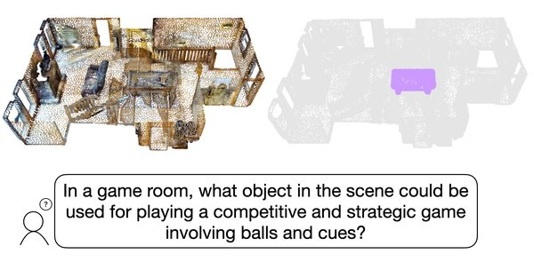
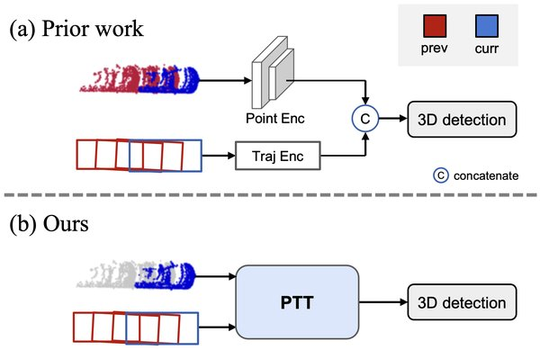
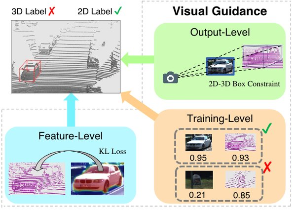
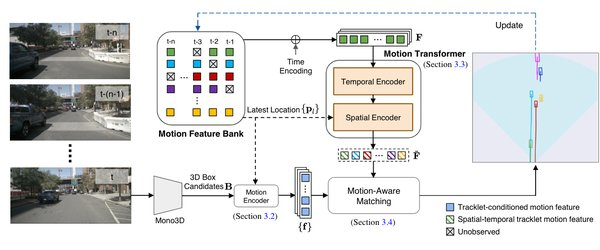
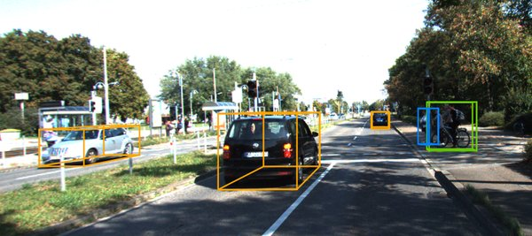
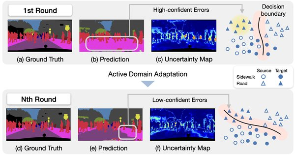

I'm currently interested in learning intelligence from visual data and working on vision-centric representation learning and scalable model-based RL. Previously, I worked on 3D perception problems.






Last Updated: